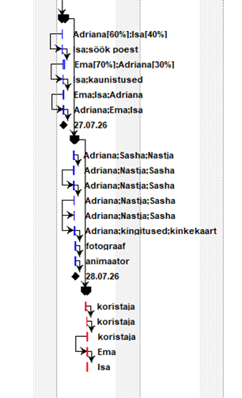
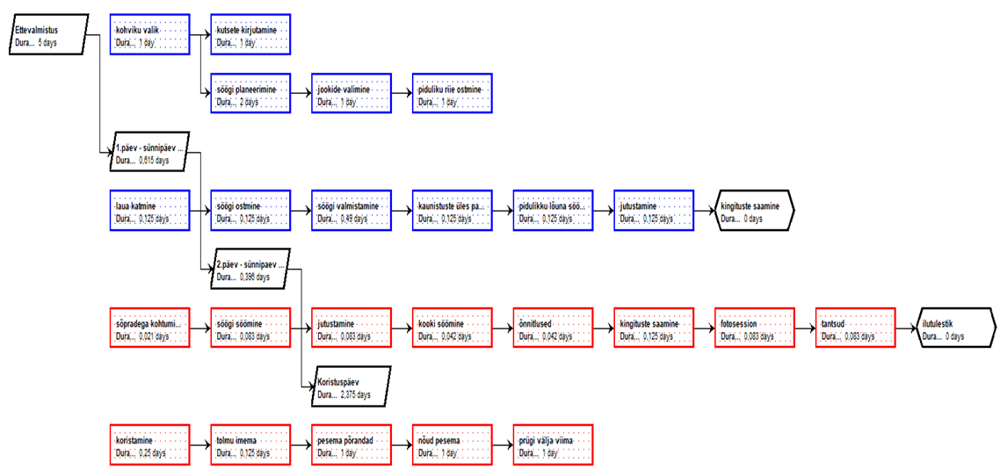
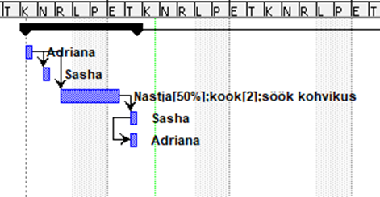

ProjectLibre kasutab peamiselt Gantt diagrammi projekti visualiseerimiseks, kuid pakub ka võrgudiagrammi (Network), mis näitab ülesannete vahelisi sõltuvusi.
Samm 1 — Ava võrgudiagramm
Mine ülemisse menüüsse ja vali vahekaart View. Vali sealt Network (võrgudiagramm). Avaneb vaade, kus iga ülesanne kuvatakse eraldi kastina, millel on näha ülesande nimi, kestus, algus- ja lõppkuupäev.

Samm 2 — Võrgudiagrammi struktuur
Võrgudiagrammis on kõik ülesanded ühendatud nooltega vastavalt nende järjestusele ja sõltuvustele. Projekti alguses on Ettevalmistus, millest hargnevad alamülesanded: kohviku valik, piduliku riie ostmine jt. Projekti lõpetab ülesanne sõpradega jalutuskäik.

Samm 3 — Ava Gantti diagramm ressurssidega
Mine tagasi vahekaardile View ja vali Gantt. Gantti vaates näed ülesandeid ajajoonel koos määratud ressurssidega. Ressursid kuvatakse otse Gantti ribade kõrval — näiteks kohvik:Oleksandra;Mariia või Mariia[50%];Oleksandra[50%].

Samm 4 — Gantti diagrammi lugemine
Gantti diagrammis on näha projekti ajavahemik 27. aprill – 18. mai 2026. Ülesanded on kuvatud siniste ribadena, sõltuvused mustade nooltena. Projekt lõpeb teemantiga tähistatud vahesammu ehk milestoniga kuupäeval 18.05.26.
- Sinised ribad — ülesanded koos kestusega
- Mustad nooled — sõltuvused ülesannete vahel
- Teemant (◆) — milestone ehk vahesam
- Ribade kõrval — määratud ressursid ja nende koormus